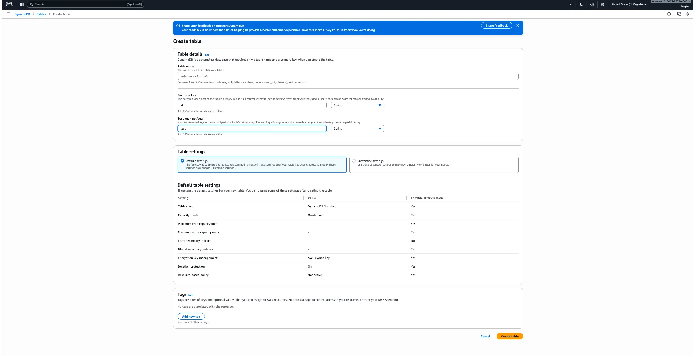
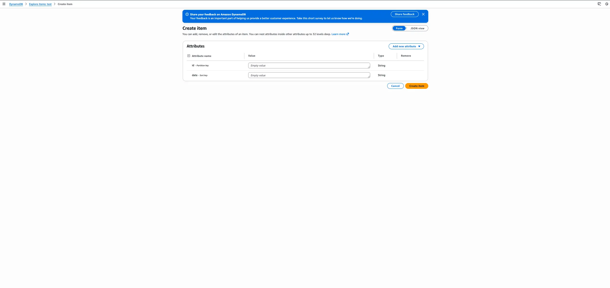

Create a DynamoDB Database
Learn cloud-based NoSQL storage with AWS DynamoDB.
Step 1 — Create a DynamoDB Table
Open the AWS Console → DynamoDB → Create table. Set a primary key (e.g., id).
Step 2 — Insert Items
Use the “Explore Table Items” feature to add test data.
Step 3 — Query & Scan Data
DynamoDB supports two read methods: Query (fast) and Scan (search all).
Step 4 — Connect With a Lambda Function
// Node.js example
const AWS = require("aws-sdk");
const db = new AWS.DynamoDB.DocumentClient();
exports.handler = async () => {
const params = { TableName: "MyTable" };
const data = await db.scan(params).promise();
return data.Items;
};
Step 5 — Use It in Your App
Your API can now read/write data from DynamoDB automatically.